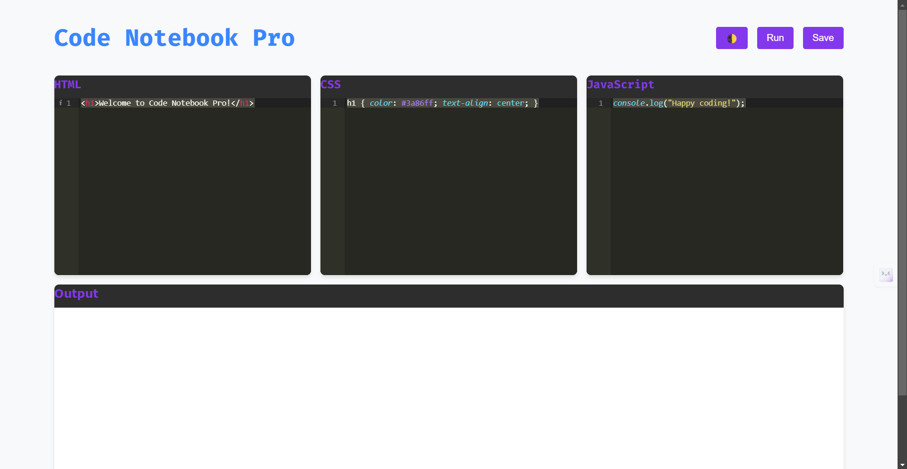

Seershan Mitra
Web Developer & Designer
Get in TouchFeatured Projects

Work-Fast-Notepad
Work Fast Notepad is a sleek and efficient online notepad application designed to enhance your productivity. With a minimalist interface and essential features, it provides a distraction-free environment for jotting down notes, brainstorming ideas, or drafting documents quickly.
Learn More

Code Notebook Pro
Code Notebook Pro is an interactive, browser-based coding environment that allows users to write, run, and save HTML, CSS, and JavaScript code snippets in real time. It's designed to be a modern, feature-rich tool for both learning and rapid prototyping.
Learn More